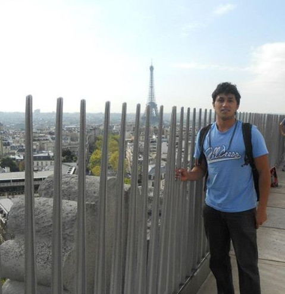

Hilder Vitor Lima Pereira
BSc in Computer Science at University of São Paulo.
MSc in Computer Science, at University of Campinas, working with cryptography under the supervision of professor Diego de Freitas Aranha.
PhD in Computer Science at University of Luxembourg. My advisor was professor Jean-Sébastien Coron.
I am now a post-doctoral researcher at COSIC, KU Leuven.
My main research interests are Homomorphic Encryption, Multilinear Maps, and Indistinguishability Obfuscation.
Awards and Scholarships
- 2015: Google Research Awards for Latin America (and a scholarship to my master's studies)
- 2012: Scholarship to study for a semester at Université de Franche-Comté, France, provided by the Rectory of University of São Paulo through the Program of Academic Merit Scholarships to International Exchange.
- 2010: Honorable mention given by the government of the State of São Paulo for works presented in the Third Technology Fair of Technical Schools of São Paulo.
Research interests
- Homomorphic Encryption
- Privacy-preserving Computation
- Cryptographic Multilinear Maps
- Indistinguishability Obfuscation
- Provable Security